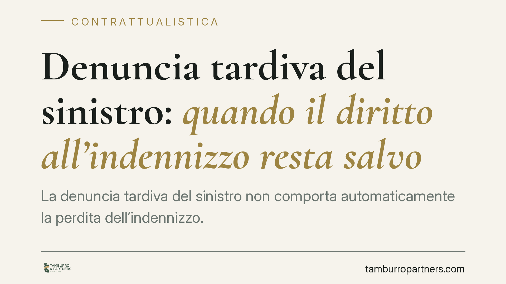

Denuncia tardiva del sinistro: quando il diritto all'indennizzo resta salvo
La denuncia tardiva del sinistro non comporta automaticamente la perdita dell'indennizzo. La giurisprudenza civile distingue tra dolo e semplice colpa dell'assicurato: solo l'inadempimento doloso fa decadere il diritto. In caso di mera colpa, l'assicuratore può al più ridurre l'importo, e solo provando un pregiudizio concreto. Un chiarimento rilevante per imprese e professionisti, soprattutto negli appalti.

Il principio: la denuncia tardiva del sinistro non cancella il diritto
La denuncia tardiva del sinistro è uno dei nodi più frequenti nel contenzioso assicurativo. L'assicurato comunica il danno oltre i termini previsti dalla polizza o dalla legge, e la compagnia eccepisce la decadenza dal diritto all'indennizzo. Secondo la giurisprudenza civile, però, questo automatismo non esiste.
La regola è che il ritardo, di per sé, non fa perdere la copertura. La perdita del diritto scatta solo in presenza di un comportamento doloso dell'assicurato. Nei casi di semplice disattenzione o negligenza, la posizione dell'assicurato resta tutelata, sia pure con alcuni correttivi.
Inquadramento normativo
Il riferimento è l'articolo 1913 del Codice civile, che impone all'assicurato di dare avviso del sinistro all'assicuratore entro tre giorni da quando il sinistro si è verificato o l'assicurato ne ha avuto conoscenza (salvo diverso termine contrattuale).
Il punto decisivo è l'articolo 1915 c.c., che distingue due ipotesi:
- se l'assicurato dolosamente non adempie l'obbligo di avviso, perde il diritto all'indennità;
- se vi manca per colpa, l'assicuratore ha diritto di ridurre l'indennità in ragione del pregiudizio sofferto.
Il dolo, qui, non va inteso in senso civilistico generico: la giurisprudenza lo lega alla nozione dell'articolo 43 del Codice penale, ossia l'evento previsto e voluto come conseguenza della propria condotta. Non basta sapere di essere in ritardo: occorre la volontà di sottrarsi all'obbligo o di pregiudicare l'assicuratore.
Conseguenza sul piano probatorio: l'onere della prova grava sulla compagnia. È l'assicuratore che deve dimostrare o il dolo dell'assicurato, per invocare la decadenza, oppure il pregiudizio concreto subito, per ottenere la riduzione. Non è sufficiente allegare il mero ritardo.
Implicazioni pratiche: appalti e sinistri emersi a distanza di tempo
Il tema è particolarmente sensibile nel settore degli appalti e subappalti, dove i danni spesso non si manifestano al momento dell'esecuzione dei lavori, ma emergono mesi o anni dopo: infiltrazioni, cedimenti, vizi costruttivi, danni a terzi riconducibili alla lavorazione.
In questi scenari la denuncia tardiva del sinistro è quasi fisiologica: l'impresa non denuncia ciò che ancora non conosce. Il principio esposto tutela chi si attiva appena il danno diventa percepibile, spostando sulla compagnia il compito di provare l'eventuale malafede.
Resta però il rischio della riduzione dell'indennità per colpa. Se il ritardo ha realmente impedito all'assicuratore di accertare le cause del danno, di limitarlo o di esercitare la rivalsa verso terzi, l'importo può essere decurtato in misura proporzionale a quel pregiudizio. La tempestività, quindi, conserva un valore economico anche quando non è più questione di sopravvivenza del diritto.
Cosa fare in concreto
- Denuncia subito, anche in via cautelativa. Appena hai notizia di un fatto potenzialmente dannoso, invia l'avviso alla compagnia con mezzo tracciabile (PEC o raccomandata), senza attendere la quantificazione del danno.
- Documenta il momento della conoscenza. Il termine decorre da quando hai avuto effettiva cognizione del sinistro: conserva email, verbali, segnalazioni e corrispondenza che fissino quella data.
- Non dare per persa la copertura in caso di ritardo. Se la compagnia eccepisce la decadenza, verifica se contesta il dolo o la semplice colpa: nel secondo caso può solo ridurre, e deve provare il pregiudizio.
- Rileggi la clausola di polizza sui termini di denuncia. Alcune polizze prevedono termini più brevi o più lunghi di quelli legali: la clausola va coordinata con i limiti inderogabili di cui all'art. 1932 c.c.
- Negli appalti, mappa i rischi a manifestazione differita. Prevedi contrattualmente obblighi di segnalazione reciproca tra committente, appaltatore e subappaltatore per far emergere tempestivamente i danni latenti.
La distinzione tra dolo e colpa, così delineata, offre un margine di tutela significativo a chi agisce in buona fede. Resta però opportuno verificare gli estremi esatti della pronuncia di riferimento nelle banche dati giurisprudenziali prima di farne uso in un atto difensivo, poiché il quadro interpretativo in materia è in costante evoluzione.
*Contributo informativo a cura di Tamburro & Partners Avvocati (Avv. Giuseppe Tamburro). Non costituisce parere legale.*
Ogni contratto ha il suo equilibrio.
Se vuoi una revisione delle clausole o una redazione su misura, scrivi allo studio. Ti rispondiamo entro un giorno lavorativo.